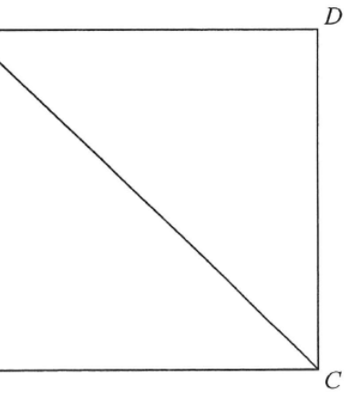

Scroll the solution — the diagram highlights each step.
In the figure, \(ABCD\) is a rectangle. Let \(E\) be a point lying on \(AD\) such that \(BE = 8\text{ cm}\) and \(CE = 15\text{ cm}\). If \(BC = 17\text{ cm}\), find the area of the rectangle \(ABCD\).

In \(\triangle BCE\) three sides are known:
$$BE = 8,\quad CE = 15,\quad BC = 17$$
Test the Pythagorean relation:
$$BE^2 + CE^2 = 8^2 + 15^2 = 64 + 225 = 289$$
$$BC^2 = 17^2 = 289$$
Since \(BE^2 + CE^2 = BC^2\),
$$\angle BEC = 90^\circ \quad (\text{converse of Pythagoras' theorem})$$
So \(\triangle BCE\) is right-angled at \(E\), with legs \(BE = 8\) and \(CE = 15\).
$$\text{Area of } \triangle BCE = \tfrac{1}{2}\cdot BE \cdot CE = \tfrac{1}{2}(8)(15) = 60 \text{ cm}^2$$
(Equivalently \(\tfrac12 \times 17 \times\) height, giving the same 60 cm².)
The rectangle \(ABCD\) and \(\triangle BCE\) have the common base \(BC\) and the same height (the width \(AB = CD\)).
$$\text{Area of } ABCD = 2 \times \text{Area of } \triangle BCE$$
$$= 2 \times 60 = 120 \text{ cm}^2$$